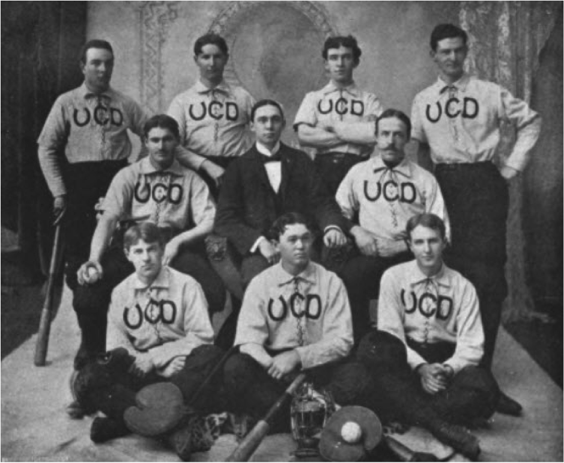

The UCSF library is an important UC contributor to the Google Books digitization project. Through the collaboration with the California Digital Library (CDL) digitization team 1,317 volumes from the general and rare book collections were scanned and uploaded to Google Books and HathiTrust, a central repository for digital books.
As part of this project, we also digitized the university publications (yearbooks, announcements, departmental newsletters). These materials are among the most heavily used in archives and requested not only by university departments, but also by people doing genealogical research and alumni. As a result, 460 of these volumes are now full-text accessible on Google Books and HathiTrust sites.
Chaff’98, v.2, yearbook of the College of Dentistry, University of California. College of Dentistry baseball team, 1897-98.
With hundreds of volumes digitized proper organization assures quick and efficient discoverability of these treasures by diverse users. With the help of HathiTrust colleagues at CDL and the University of Michigan, we set up two collections:
University of California, San Francisco collection
This collection contains books, pamphlets, UCSF University Publications, and yearbooks dating back from 16th century through 2000s held at the University of California, San Francisco Library and Special Collections.
UCSF University publications
This collection contains materials published by UCSF schools, programs, and research institutes (course catalogs, announcements, student publications, annual reports, newsletters, etc.) as well as yearbooks dating back from 1864 held at the UCSF Archives. Among them is “The Introductory address delivered by Professor H. H.Toland at the Toland Medical College, San Francisco on Monday, October 24, 1864.”
Please read the full story on the UC Libraries web site and CDL blog.

UCSF Library Google Books Team. Front row: Andy Panado, Polina Ilieva, Bea Mallek, Karen Butter. Back row: Eric Peterson, Art Townsend, Alberto Luna, Tyrone McCloskey, Don Ciccone, Bazil Menezes, David Campbell, Anneliese Taylor. Not pictured: Margaret Hughes, Julia Kochi, Bertha Hall, Lucy Friedland, Mark Zanandrea, David MacFarland, Alan Daniel, Jubeda Azam, Deborah Freeze, Susan Boone and Kirk Hudson.
About CDL
The CDL was founded by the University of California in 1997 to take advantage of emerging technologies that were transforming the way digital information was being published and accessed. Since then, in collaboration with the UC libraries and other partners, CDL assembled one of the world’s largest digital research libraries and changed the ways that faculty, students, and researchers discover and access information. In 2006, CDL and the University of California libraries partnered with Google on a project to digitize millions of books from the campus collections.
About HathiTrust
HathiTrust Digital Library is a digital preservation repository and highly functional access platform. It provides long-term preservation and access services for public domain and in copyright content from a variety of sources, including Google, the Internet Archive, Microsoft, and in-house partner institution initiatives. Launched in 2008, HathiTrust has a growing membership, currently comprising more than 90 partner libraries. Over the last six years, the partners have contributed more than 11 million volumes to the digital library. More than 3.7 million of the contributed volumes are in the public domain and freely available on the Web. For more information, visit the HathiTrust About page.


{kind=link}
{kind=link}
{kind=link}
{kind=link}
{kind=link}
{kind=link}
{kind=link}
{kind=link}